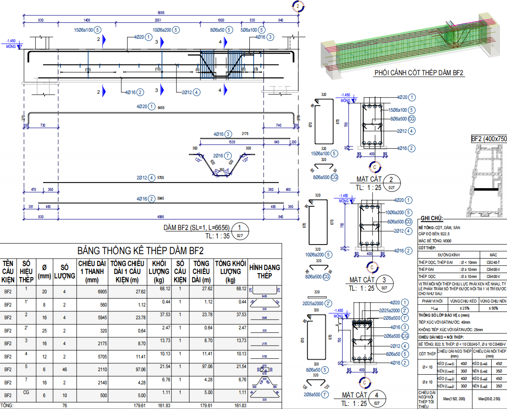
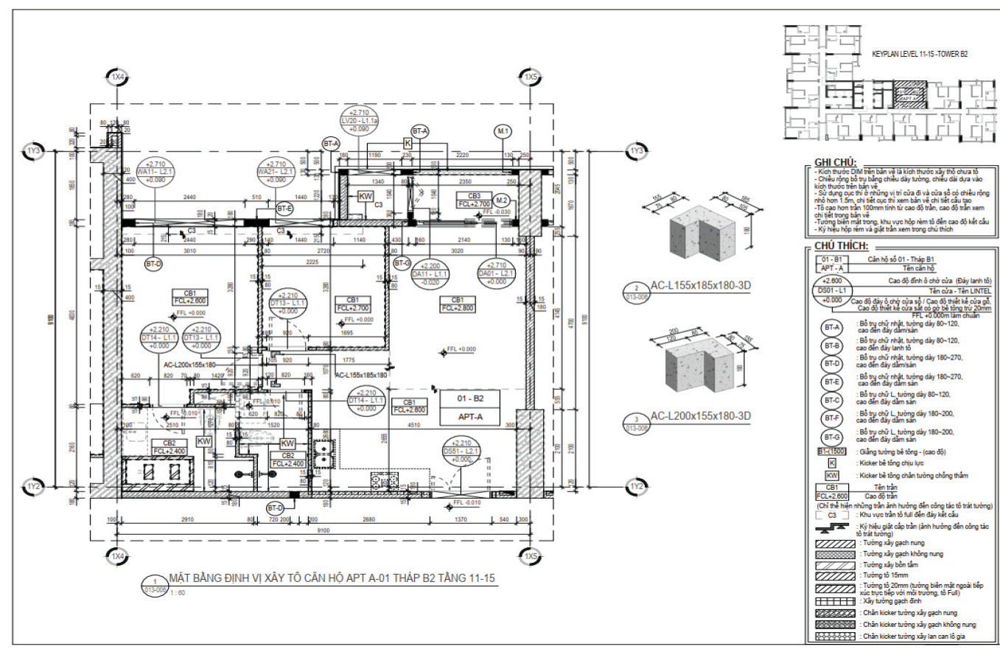
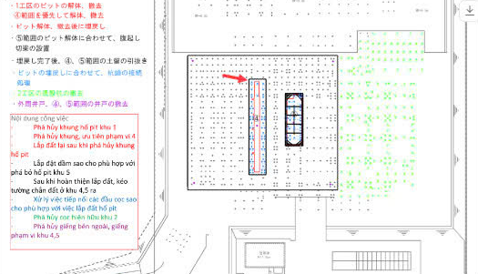
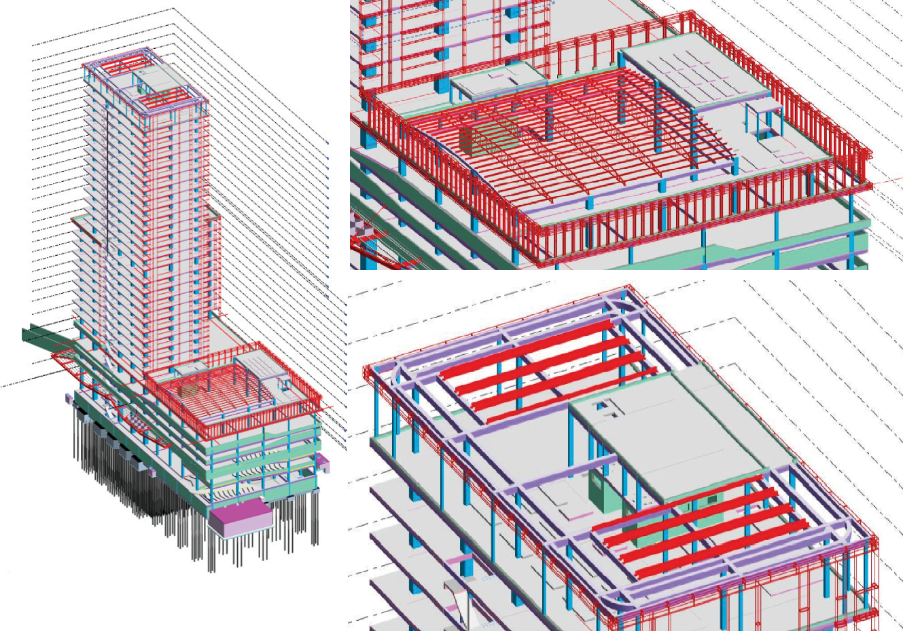
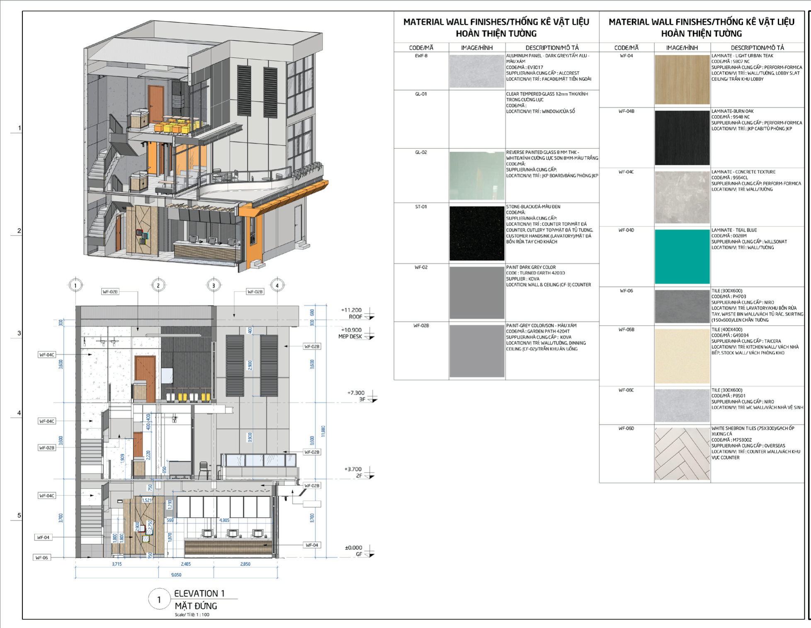
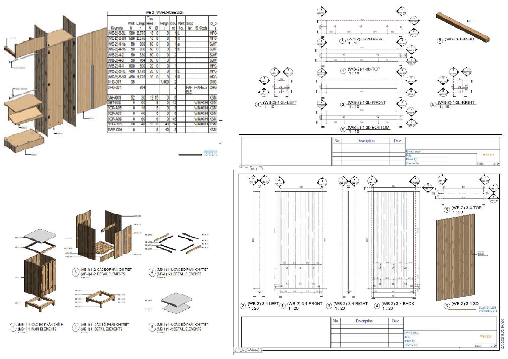
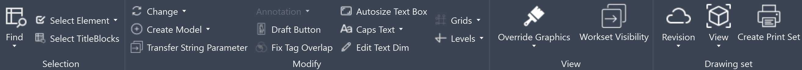
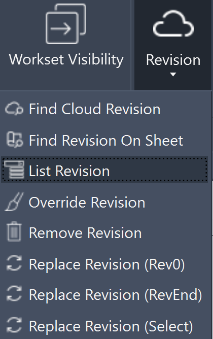
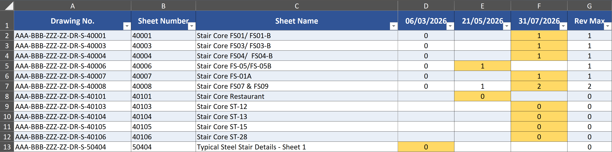

Ngo Thi Phuong Nhi
BIM professional with over 4 years of experience across structural modeling, shop drawings, fabrication detailing, as-built documentation, and BIM information management. Experienced in model development, drawing and revision control, task coordination, and collaboration with engineering teams. Proactively develops custom automation tools using Python and C# to improve workflow efficiency, strengthen information control, and support reliable project delivery. Seeking to progress toward a BIM Coordinator role by combining hands-on BIM experience, structured project information management, and a continuous improvement mindset.
Professional Profile
Passionate about bridging technical engineering complexities with advanced digital workflows, model information management, and custom automation tools.
Academic Background
Bachelor of Civil & Industrial Engineering
Ho Chi Minh City University of Technology (HCMUT - Đại học Bách Khoa TP.HCM) (2019 – 2024)
• GPA: 7.28/10 (Good Grade)
• Capstone Project Score: 8.71 (Highest Distinction conferred that semester).
Certifications & Languages
• Revit Structure (REACTEC - HCMUT)
• TOEIC L&R: 615
• Training: Creating a BIM Execution Plan (BEP), Navisworks: Clash Detection.
Core Competencies & Technical Skills
Structured professional competencies and technical software stack.
CORE COMPETENCIES
- BIM & Information Management: Model development, model updates, information control, and model–drawing consistency.
- Drawing & Revision Management: Revision tracking, design change management, issue tracking, and deliverable monitoring.
- BIM Coordination Support: Multidisciplinary communication, engineering design updates, and coordination issue follow-up.
- Workflow Optimization: Workflow analysis, process improvement, and custom automation tool development.
- BIM Quality Control: Model information checking, parameter validation, and information extraction.
- Project Delivery Management: Task allocation, deadline monitoring, and work progress tracking.
TECHNICAL SKILLS
- BIM Authoring & Documentation: Autodesk Revit, AutoCAD.
- BIM Collaboration Platforms: Autodesk Construction Cloud (ACC), Aconex.
- Automation & Scripting: Python, C#, pyRevit.
- Visual Programming & Data Workflows: Grasshopper, Dynamo, openpyxl.
- Visualization & Office: Enscape, Twinmotion, Microsoft Word, Excel, PowerPoint.
- Structural Analysis: ETABS, SAP2000.
- Additional Tools: Rhino.
Professional Experience
- Developed initial structural BIM models, updated deliverables based on design changes and engineer instructions.
- Managed drawing revisions, tracked changes, and maintained drawing consistency.
- Participated in Architectural Coordination (ARC) meetings as BIM representative and collaborated with international structural teams.
- Monitored project deadlines, task progression, and assisted with internal team task allocation.
- Reviewed 3D models via Autodesk Construction Cloud (ACC) and tracked 2D drawing revisions via Aconex.
- Authored custom Python/C# scripts and Grasshopper workflows to enhance efficiency, automate revision tracking, and extract model data.
- Produced structural reinforced concrete shop drawings and finishing shop drawings (masonry, plastering, tiling, floor screeding).
- Executed as-built BIM models for apartments and retail chain projects, updating non-geometric data and parameters.
- Created construction-method models (foundations, excavation, king-post shoring, and structural phases for a Japanese wastewater treatment plant).
- Handled issue reporting, multi-discipline conflict resolution, and coordinated directly with on-site teams.
- Supported foundational BIM modeling operations, finish drawings, and model coordination tasks.
- Updated 3D models to LOD 500 detail and managed non-geometric information conforming to project standards.
Featured Projects Portfolio
All 8 projects prioritized by BIM Coordinator competencies and lifecycle phases.
1. Opera Theatre, Hanoi
- Developed initial structural BIM models from early design stages.
- Updated and modified models in accordance with latest design changes and engineer instructions.
- Implemented structural drawings and 2D details.
- Managed drawing revisions and tracked documentation updates.
- Coordinated with engineers and multidisciplinary teams to update models.
- Monitored project deadlines, task schedules, and assisted in internal BIM task allocation.
- Participated in Architectural Coordination (ARC) meetings as BIM representative.
- Collaborated with international structural (STR) teams during design updates and issue resolution.
- Reviewed 3D models via Autodesk Construction Cloud (ACC) and tracked drawing revisions via Aconex.
- Authored custom Python/C# tools based on self-analyzed workflows to boost efficiency and control revision data.
- Utilized Grasshopper workflows to assist model data control and extraction.

Structural Shop Drawings'">2. Residential Commercial Building — Structural Shop Drawings
- Implemented shop drawings of reinforced concrete structures.
- Updated drawings and models aligned with execution requirements.
- Monitored task progression and schedules.
- Coordinated directly with on-site construction teams.
- Checked, reported, and resolved clashes during execution phases.
- Updated model information for drawing issuance.

Finishing Shop Drawings'">3. High-rise Apartment — Finishing Shop Drawings
- Implemented finishing shop drawings including masonry (wall construction), plastering, tiling, and floor screeding.
- Updated drawings corresponding to execution changes.
- Monitored schedules and coordinated with site teams.
- Controlled and resolved cross-discipline coordination clashes.
- Supported information synchronization between drawings and site requirements.

Wastewater Treatment Plant'">4. Wastewater Treatment Plant — Construction Method Modeling
- Mô hình hóa biện pháp thi công.
- Triển khai mô hình móng và dầm.
- Mô hình hóa công tác đào đất.
- Mô hình hóa hệ chống kingpost.
- Phân chia mô hình theo các giai đoạn thi công và thể hiện trình tự/phạm vi thi công.

Commercial Office O&M'">5. Commercial Office — Operation & Maintenance
- Created and modified Revit Families.
- Updated 3D facility models to LOD 500 detail per project requirements.
- Updated non-geometric information for model components.
- Verified data against project standards to support facility management and O&M.

Restaurant Project'">6. Restaurant Project — Design & As-built
- Updated and modified models in line with latest design modifications.
- Checked, reported, and resolved cross-discipline conflicts.
- Implemented as-built BIM models for restaurant spaces.
- Created perspective renderings (Enscape).
- Supported current-state information updates.

Interior Design'">7. Interior Design — Fabrication & Shop Drawings
- Built 3D interior models at LOD 400 detail.
- Implemented detail fabrication drawings for interior elements.
- Generated quantity schedules and BIM scheduling workflows.
- Updated models and drawings per execution requests.

8. HCMUT Capstone Project
- It was awarded a mark of 8.71 (out of 10), which was the highest distinction conferred that semester.
- Including the main parts from modeling to calculation: Architecture, Foundation, Structure, and Construction method phasing.
- Software: Revit, AutoCAD, Etabs, SAP2000.
BIM Automation & Workflow Improvement
Developed and applied automation workflows to streamline BIM tasks, improve information management, and support project documentation.
01. Custom pyRevit Toolkit — pyNN
A collection of custom Revit tools developed to support daily BIM workflows, including revision management, model utilities, view management, and documentation tasks.

pyNN Toolkit Toolbar'">Visuals: pyNN toolbar in Revit
List Revision
Custom pyRevit Tool | pyNN
Function
Extracts and consolidates revision information from a user-defined sheet list, supporting three input methods: Print Set, Drawing List, and manual sheet selection.
Key Features
- Lists drawing numbers, sheet numbers, and sheet names.
- Displays revision information for each sheet in separate columns.
- Highlights the maximum revision value (Rev Max) for each sheet for quick identification.
- Exports the consolidated revision list to Excel for sharing and further review.
Purpose
Streamlines revision information collection across multiple sheets, supporting drawing revision tracking, documentation review, and information sharing.

List Revision Tool'">Visuals: List Revision tool in Revision panel

Excel Output Report'">Visuals: Excel output generated by List Revision
Other Tool Categories
- View & Documentation Management: View management, print set creation, and sheet-related utilities.
- Model & Data Utilities: Element selection, parameter transfer, model creation, and tag-related checks.
- Graphics & Annotation: Graphic overrides, workset visibility, grid and level controls, and text/dimension editing.
02. Revit–Rhino Data Integration — Grasshopper
A Grasshopper workflow connecting Revit model data with Rhino geometry and element information.
- Extracts structural element information and geometry from Revit.
- Transfers and processes geometry through Grasshopper for use in Rhino.
- Associates relevant information with corresponding Rhino elements.
Visuals: Grasshopper workflow and the resulting Rhino model.
03. Dynamo & Additional Automation Tools
Created Dynamo scripts to support repetitive Revit tasks, including:
- DeleteAllView3D
- find dwg
- FindViewByViewTemplate
- HalftoneTagbyParameterHostElement
- SelectTitleBlockFromSchedule
- SetPrintSetFromSchedule
- T.O.C Column
Additional Tool: C#-based Align Tag utility, Create Grid&Level, Auto Rebar for Beam, AutoCAD Native Converter, Create Wall From AutoCAD.
Technologies: pyRevit, Python, Grasshopper, Dynamo, Rhino, C#.
04. Navisworks Clash Detection Practice
Completed hands-on clash detection and coordination exercises based on LinkedIn Learning training, focusing on multi-discipline model integration and clash matrix setup.
- Integrated architectural, structural, and MEP models for clash identification.
- Generated custom clash tests, grouped intersection issues, and managed clash reports.
- Demonstrated quick adaptability to standard CDE platforms and coordination environments.
"Confident in rapidly mastering Navisworks and any other CDE platform upon project onboarding."
Let's Connect
I am actively open to professional opportunities as a BIM Coordinator or BIM Engineer. Feel free to reach out:
ntpnhi1604@gmail.com | 0822 605 687